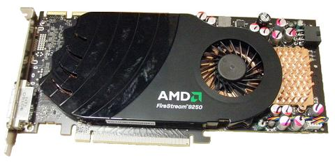
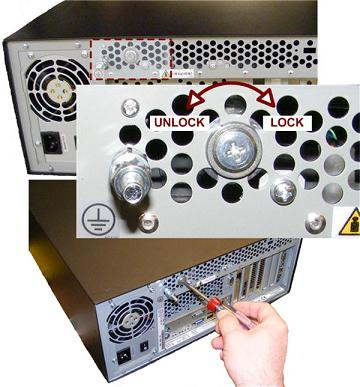
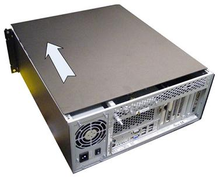
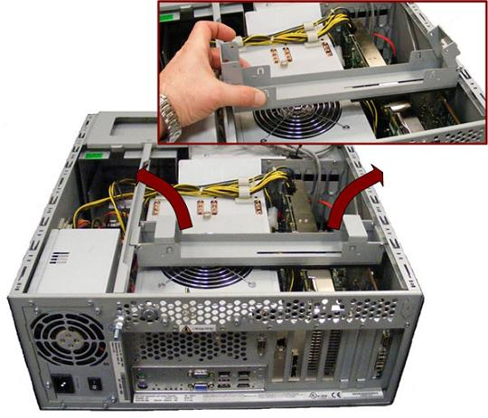
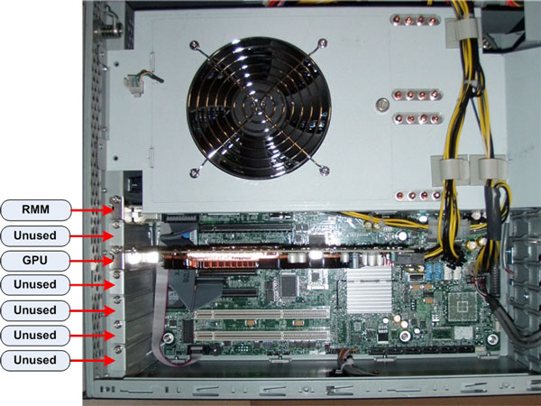
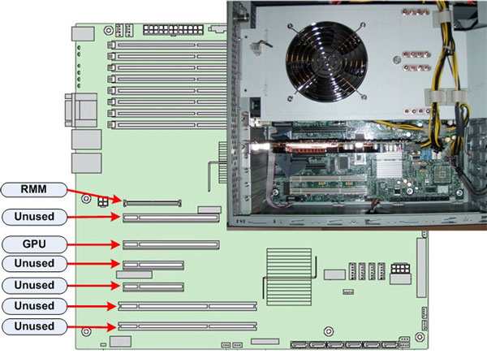
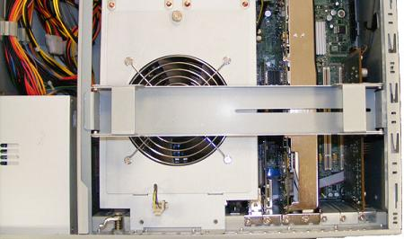
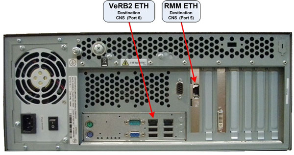

Operating Documentation
Direction 5193574-800, Rev# 22
LightSpeed 7.X Service Methods
Module Version 2.0, Version Date 8/17/10
Operating Documentation |
| Required Persons | Preliminary Reqs | Procedure | Finalization |
|---|---|---|---|
| 1 | 45 mins | 30 mins |
This procedure describes and illustrates the steps necessary to replace the Volume Reconstruction Box Computer (VeRB2) GPU Card.
| NOTE: | Hardware Configuration control is critical for proper system operation. Mixing of different generations of GPU Cards may result in image quality issues! Example: DIG and VeRB Computers utilize NVidia GPU's. DIG2 and VeRB2 Computers utilize AMD GPU's. Like type GPU's (NVidia or AMD) must be installed in both the DIG and VeRB Computers in the same console. Mixing of first and second generations DIGs and VeRBs is not permitted. |
Illustration 1: Volume Reconstruction Box Computer version 2 (VeRB2) GPU Card

| Last revised: | 2-June-2010 |
| Item | Qty | Effectivity | Part# | Manufacturer | |
|---|---|---|---|---|---|
| Standard FE Toolkit | 1 | - | - | - | |
| 4 mm Hex Key Wrench | 1 | - | - | - | |
| Phillips Screwdriver | 1 | - | - | - | |
| Item | Qty | Effectivity | Part# | Manufacturer | |
|---|---|---|---|---|---|
| VeRB2 Computer GPU Card | 1 | - | 5346581 | AMD | |
| ||||
| ELECTROCUTION HAZARD | ||||
| HIGH VOLTAGE PRESENT | ||||
| USE PROPER LOCKOUT / TAGOUT PROCEDURES BEFORE REPLACING THE COMPONENTS. |
| ||||
| POTENTIAL FOR INJURY TO SERVICE PERSONNEL | ||||
| THE VeRB2 COMPUTER CHASSIS CAN WEIGH IN EXCESS OF 40 POUNDS. | ||||
| DEPENDING ON YOUR HEIGHT AND ACCESS TO EQUIPMENT REMOVAL/INSTALLATION, LIFTING ASSISTANCE MAY BE REQUIRED. USE YOUR JUDGMENT TO DETERMINE IF LIFT ASSIST OR A SECOND PERSON MAY BE REQUIRED TO ASSIST IN REMOVAL AND INSTALLATION. |
| ||||
TO PREVENT DAMAGE TO COMPONENTS WITHIN THE VeRB2, OBSERVE THE
FOLLOWING ESD PRECAUTIONS:
FOR FURTHER INFORMATION REGARDING ESD PROTECTION, REFER TO THE SAFETY CHAPTER IN THIS PUBLICATION | ||||
| ||||
| IN ORDER TO MEET EMC REQUIREMENTS, THE CHASSIS MODULES MUST BE PROPERLY INSTALLED AFTER SERVICING. CHECK THAT THE MODULES ARE MOUNTED FIRMLY IN PLACE AND LOCKED DOWN WHERE APPLICABLE. | ||||
| ||||
| FOLLOW ALL REQUIRED SAFETY AND PPE PROCEDURES CUSTOMARY FOR YOUR ORGANIZATION WHEN WORKING ON THIS PRODUCT. | ||||
| Condition | Reference | Effectivity |
|---|---|---|
Access to both the front and rear of the Operator Console is required. Move the console away from walls and remove obstacles in room. | - | - |
Only trained service personnel should service the GE CT Scanner. | - | - |
Select one of the following methods to power off the Operator Console:
If Applications are running, click the Shut Down icon and select Shut Down.
If Applications are down, open a Unix Shell using the Toolchest. Type: {ctuser@hostname} halt. Press <Enter>.
The Operator Console monitor will display a ‘System Halted’ message when it is acceptable to power off the Operator Console.
Power OFF the Operator Console at the front panel switch. (See Illustration 2.)
Illustration 2: Console Power Switch

Perform prescribed Lockout/Tagout procedure. For added protection, disconnect the Twist-N-Lock Main Power Cable from rear of console.
Remove the front and rear Operator Console Covers per prescribed cover removal procedure.
Remove the cable connections at the rear of the VeRB2 Computer chassis.
| NOTE: | Verify that all cables are labeled and clearly marked. If necessary, add a label for clarity. |
Remove the power cord at the rear of the VeRB2 Computer chassis.
Remove the four (4) 5mm socket cap mounting screws and washers from the front of the VeRB2 Computer chassis, holding the chassis to the Operator Console rack.
Illustration 3: VeRB2 Computer Mounting

Slide the VeRB2 Computer chassis forward (out the front of console) and set aside.
At the rear of the VeRB2 Computer Chassis, release the Chassis Cover Lock using a Phillips screwdriver. Back out lock screw at least two (2) full turns.
Illustration 4: VeRB2 Computer Chassis Cover Lock

Slide the Chassis Cover towards the front of the chassis and remove.
| NOTE: | You may need to tap on back upper edge of cover to release cover before sliding forward. |
Illustration 5: VeRB2 Computer Cover Removal

Remove the Expansion Card Hold-down Clamp from VeRB2 Computer Chassis.
Illustration 6: VeRB2 Computer Expansion Card Hold-down Clamp Removal

Disconnect the Power Supply Connector at the rear of the GPU Card.
Remove the Phillips Screw holding the GPU Card in the VeRB2 Computer chassis and carefully remove the card from the Systemboard.
Illustration 7: VeRB2 Computer GPU Card Location

Carefully install the replacement GPU Card in the same location (slot) in the VeRB2 Computer. Make sure all cables are clear of the GPU Card and the card seats firmly in the Systemboard.
Illustration 8: VeRB2 Computer GPU Card Slot Location

Reinstall the Phillips Screw to secure the GPU Card to the chassis.
Reconnect the Power Supply Connector to the rear of the GPU Card.
Reinstall the Expansion Card Hold-down Clamp in the VeRB2 Computer Chassis.
Illustration 9: VeRB2 Computer Expansion Card Hold-down Clamp Placement

| NOTE: | The Expansion Card Hold-down Clamp must be installed as illustrated above. The Clamp should be centered over the Cooling Fan with slotted end over expansion cards. |
Reinstall the VeRB2 Computer Chassis Cover and lock the cover in place.
| NOTE: | IN ORDER TO MEET EMC REQUIREMENTS, THE CHASSIS MODULES MUST BE PROPERLY INSTALLED AFTER SERVICING. CHECK THAT THE MODULES ARE MOUNTED FIRMLY IN PLACE AND LOCKED DOWN WHERE APPLICABLE. |
Slide the replacement VeRB2 Computer into the Operator Console from the front.
Replace the four (4) 5mm socket cap mounting screws and washers to secure the VeRB2 Computer chassis to the Operator Console rack. Torque to 4.6 N-m.
Mount the power cord to the rear of the VeRB2 Computer chassis and verify that its power supply switch is turned to the ON position.
Replace the rear cable connection(s).
Illustration 10: VeRB2 Cable Connections and Destinations

For cabling details, refer to the appropriate interconnect located in the System Diagrams folder of this service methods publication.
Reconnect the Twist-N-Lock Main Power Cable from rear of console and remove Lockout Tagout protection applied earlier.
Power ON the Operator Console at the console’s front panel switch.
Visually verify the VeRB2 Computer front panel Power LED is illuminated. If not, press the VeRB2’s front panel power switch to apply power to the VeRB2 Computer.
Illustration 11: VeRB2 Front Panel Indicators and Switches

Verify that the VeRB2 Computer has powered up and is not displaying or sounding any POST Errors.
| NOTE: | See the VeRB2 Troubleshooting procedure if any errors appear. |
No other verifications steps required.
Refer to System Scanning Tests in the Functional Checks chapter of this manual to confirm proper operation.
Reinstall Console Front and Rear Covers.